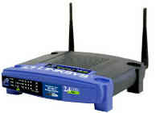
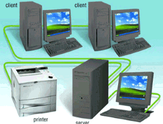
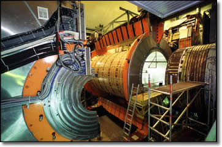
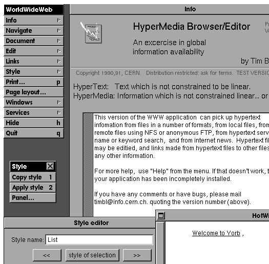

What's the purpose of a computer? That's pretty simple: computers are designed to run programs, just like your Walkman is designed to play music, and your DVD player is designed to show movies.
To run a particular program on your computer, a spreadsheet, say, or a computer game, you can install the program on your local hard disk and start it running from your computer's "desktop", by clicking on its icon. Java, though, gives you another option.
Using Java you can write computer programs that run inside your Web browser, like Mark Wesley's "Fish Bowl" program on the right; with these kinds of programs, called Java applets, there's no separate download step and no explicit run step: you just visit a Web site containing the Java program, and it automatically starts working inside your browser.
Up to now, all of your programs have been text-based (console mode) Java applications. This week you'll write your first graphical Java applet. Before we do that, though, let's spend a little time looking at the environment that Java applets "swim around in"—the Internet, the World Wide Web—and the HTML language used to create the pages that will contain your Java programs.
Computer Networks
So far, we've talked about hardware, the physical components that make up your computer, ans software, the "digital-content" that your computer "plays". Where do computer networks come into this? Are they hardware or software, and what do they do?
A network is a little bit of both hardware and software, and the purpose of a network is to facilitate the last step of the information processing cycle, communications.
Let's start with the definition of a network. A network is a:
collection of computers and devices connected together for purposes of communication
A network consists of three parts:
- network devices
- network media
- network software

A network device is a piece of hardware that can transmit and receive signals from other computers. One type of a network device is a modem; others are network interface cards (or NICs), or a Wireless Access Point (WAP).When your networking device transmits a message to another computer, how does it get from your computer to its destination? That's the job of the second networking component: the networking media. When signals are sent from one computer to another, they can travel over computer cables, such as those used to wire-together a local area network. They can travel over telephone lines, as they do when you dial into your Internet Service Provider.
If you have a smart-phone, a PDA, or a wireless card in your notebook computer, the signals might travel via radio frequency or over a cell-pone network. And, when visit the Louvre as you're surfing the Web, the signals may be traveling through outer space, via satellite.
Why Bother?
Just because you can do something, doesn't mean you should. Your computer is just a machine; it never gets lonely, so why should you want it to communicate with other computers? We can answer that in one word: sharing.
Having a network allows you to share resources between many different computers. For instance, with a network you can share:
- Hardware Devices : in our Computing Center, for instance, all of the students share a handful of expensive laser printers. We do the same thing with large disk storage.
- Software Programs : at OCC, our thousands of computers all use a central copy of Microsoft Office for installation. Of course we still have to pay for every individual instance of Office in use, but we save a lot of money on the cost of installing and maintaining the software.
- Data : OCC's network allows us to keep all of your student records in one place, and access that data from anywhere on campus.
- Information : our network enables us to deliver this online class itself.
The bottom line is that networking just makes computing
more productive. Sun Microsystems trademarked this
slogan several years ago, and it really strikes me as true
To see exactly what that means, you might want to read
this article
from a speech given by Tim O'Reilly.
Clients and Servers
For all of this sharing to take place, somebody has to be in control; otherwise Computer A and Computer B will end up in a big fight over who gets to print first if they both share a printer.

In a network, we call the computer that controls access to a particular device, such as a printer or collection of documents, a server. A server in this sense is not, necessarily, a specific kind of computer, but a particular role that a computer takes on.There are many different kinds of servers. For instance, the computer that controls access to a printer is called a print server. A computer that allows many computers to share access to its hard disks, such as the one used in the OCC Computing Center, is called a file server. The computer that manages a collection of Web documents, (coming up shortly), is called a Web server.
The computers that use the services of a server are called clients. So, for instance, as you view this Web page, your computer is a client, while the computer that stores the Web pages at OCC is the server.
The terms client and server are also used to refer
to the software that manages or requests a resource,
instead of the computer itself. For instance, the pages you
are viewing are stored on a computer at OCC which the computing
staff has named Athena. However, that single computer is running
two separate Web server programs: one Web server that serves
up the faculty Web pages pages, and a different Web server
program that serves up the regular campus Web site.
The same thing applies to the term client. In once sense
the computer you are sitting at is a client, but in another
sense, the program you are using, Internet Explorer,
Firefox, or Safari, is the real client, since it is making and
receiving the requests.
The Internet
If networking is so wonderful, you might wonder why we don't just network all of the world's computer's together. Unfortunately, that's more difficult than it might seem at first glance.
When networks were first invented, each different hardware and software vendor used a different networking standard. If you purchased a network interface card that used Arc-Net or Token-Ring, you couldn't communicate with computers that used Ethernet, for instance. The same thing was true with software; if your network was mostly Mac's running Appletalk, you couldn't just plug in a PC running Lan-Manager. Even in the PC world, there were several incompatible software standards when it came to network operating systems.
So, the first order of business was to get everyone to use the same networking hardware and software. Obviously, that was a complete non-starter; Apple users or Unix shops are not going to roll over and start using Microsoft networking software, and vice versa.
Instead of throwing out all of the incompatible networking software in the world, and making everyone start over, the architects of the Internet came up with the idea of inter-networking; don't connect all of the computers together, just connect the networks.
And, that's what the Internet is: it's a global collection of networks. Internally each network can manage its communication using any hardware and software it likes; externally, though, all of the networks on the Internet have agreed on a common method of communication, called TCP/IP, or Transmission Control Protocol/Internet Protocol.
This agreed upon internetworking standardization means that I can sit on my Unix network, and retrieve a file from a Web server sitting on an Apple network or one sitting on a Windows network, and never know the difference.
Open Protocols
The Internet works because all of the different companies that use it agreed to use the same open protocol. This is kind of like how all of your appliances agree to use the same kind of electricity. You can plug in your toaster or your TV to the same plug, and both of them work.
TCP/IP, though, is a low-level protocol. The Internet pioneers soon developed higher-level protocols, like the standards that are used for TV or radio transmission, for instance. These standards mean that you can plug in a TV or radio from any manufacturer, and receive TV or radio broadcasts. You can't do that with your toaster, though, because it doesn't respond to the same kind of high-level protocols, even though it uses the same kind of electricity as your TV.
So, what kind of higher-level protocols were developed for the Internet? Here are the most common ones:
Telnet
A Telnet server allows you to connect to the machine running the service and to use the machine exactly as if you were sitting at the console. Telnet is common in the UNIX world, where each computer is expected to have many users. It's less common in the Mac and PC worlds, where most machines are single user.
Today, a safer version of "telnet" is pretty common, known as SSH or Secure Shell protocol. Using SSH is pretty much like using Telnet, except that the communication between the client and server is encrypted, rather than taking place in "plain text".
FTP
A File-Transfer-Protocol server allows you to move files between different machines, even if both machines are using different operating systems. Using FTP, it's easy to transfer files between UNIX, Mac, and PC machines over the Internet, when it would be difficult—if not impossible—to directly transfer the files.
SMTP
Most of us take global email for granted, but just a few short years ago there were several incompatible email systems, restricted to exchanging mail between local clients on the same local area network. Those proprietary email systems haven't entirely disappeared, but all of them have had to make arrangements to deal with SMTP: the Simple Mail Transport Protocol.
POP
SMTP is the protocol used to send mail around the Internet, but most of us don't have SMTP servers on our local machines; instead, we use our Internet Service Provider's (ISP) SMTP servers to send and receive our email. Once the mail arrives at your service provider, however, you may want to copy it from your ISP's servers to your local machine for reading. The Post Office Protocol, or POP allows you to do that.
HTTP
Perhaps the most important, and most widely used of these high-level protocols is the HyperText Transfer Protocol, which is the basis for the World-Wide-Web. HTTP is a "language" used to communicate between Web servers and Web clients. (Today, a Web client is commonly called a "Web Browser".)
The World-Wide-Web

Tim Berners-Lee , the Father of the Web, (and first Duke of URL, as the old nerd-joke went, but now Sir Tim for real), invented HTTP, the HyperText Transfer Protocol, while working as a researcher at the European Center for Partical Physics (CERN). Like many who have had a great impact on the world, Berners-Lee simply wanted to find an easier way to get his work done. In this case, he wanted an easier way to exchange documents with other researchers and academics.If you've ever read an academic paper, you know that they are literally peppered with references and citations: it's how you get "graded" in that profession. Unfortunately, it makes for somewhat difficult reading because just when you've gotten to the interesting part, there's one of those darn footnotes, and you, being the conscientious type, have to plod down to the library, look up the reference, and then plod back to where you left off, by which time you've forgotten all about what the author was originally trying to say, if you ever cared, in the first place.
Whew!
Berners-Lee's idea was to store the documents on computers connected via the Internet. When you retrieved the document, all of those pesky references would be translated into hyperlinks. As you read through the document and encountered a reference, rather than breaking your train of thought, you could just select the link and instantly view the reference.
HTTB: Hypertext TidBits
For Berners-Lee's vision to come to pass, there were several different problems that needed to be solved:
- Finding a particular document
- Encoding the document to add the links
- Retrieving and transporting the document
Here are the pieces Berners-Lee designed to solve these problems.
Location, Location, Location
Since the actual documents Berners-Lee wanted to read could be located anywhere in the world, every document had to be given a unique identifier. At first a scheme was proposed where every document would be branded with an incomprehensible very large number called a GUID. All reasonable people thought that this idea was a severe afront to our Civil Liberties, however, and it was abandoned except in some of the remote provinces of Redmond :).
The idea Berners-Lee actually came up with, and that was adopted, was the URL or Uniform Resource Locator. You'll learn more about these in a later lesson. A URL provides a unique identifier for any document on the Internet, located anywhere in the world. (For those of you who are sticklers for detail, a URL is actually a type of Universal Resource Identifier or URI. The difference between a URI and a URL, is that the URL contains information about which type of protocol to use to serve the unique document.)
Linking Up
Knowing where a document lives is a good start, but to actually create the hyperlinks inside the document, each document needs to be encoded in some manner. For instance, some of the references in a footnote might not be available online, so having a link for that reference would be impossible.
The scheme that Berners-Lee came up with to encode these hypertext documents is called HTML or the HyperText Markup Language.
Sending Documents
When a link is encountered in a document, some way is needed for the clients and servers, (located on different machines), to request and transfer those documents. For this part Berners-Lee invented HTTP or the HyperText Transfer Protocol. HTTP is the language that Web Servers and Web Clients (browsers) use to talk to each other.
More Clients and Servers
Going back to the beginning of this discussion: do you remember clients and servers? Well HTTP also has clients and servers. The HTTP server is called a Web server, but in the UNIX tradition [where all this started] it is often named httpd, which stands for the hyper-text-transfer-protocol-daemon.
The HTTP client program is called a browser . Tim
Berners-Lee built the first Web browser, named, appropriately,
WorldWideWeb , in 1990 shown here:

You can read Tim's account and see a larger screenshot of the browser, which predates Mosaic, (not to mention Netscape Navigator and Internet Explorer), by several years at:
The only problem with Tim's browser was that it only ran on relatively rare and expensive NeXT machines; all of the other Web browsers were text based, academic papers not being known as hotbeds of creative graphics. It wasn't until an undergraduate student making $9.00 an hour—Mark Andressen—created the first Windows/Mac graphical Web browser, Mosaic, that things really took off.
And that, as they say, is history.
Coming Up Next ...
In this lesson, you learned a little bit about the Internet and the World Wide Web. You learned about the differences between clients and servers, about different kinds of networking protocols, and how to specify a URL or Uniform Resource Locator.
In the next lesson, you'll learn how to write Java programs, called applets, that work inside a Web page.